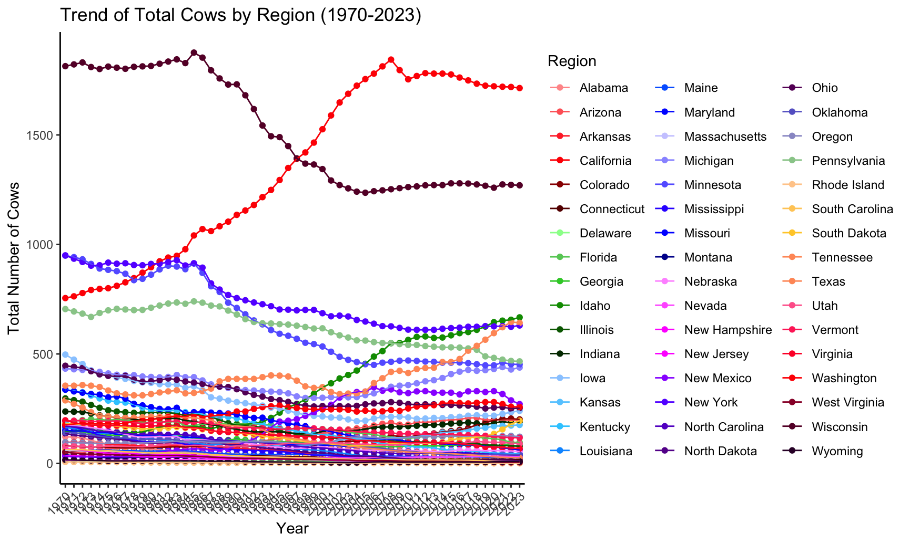
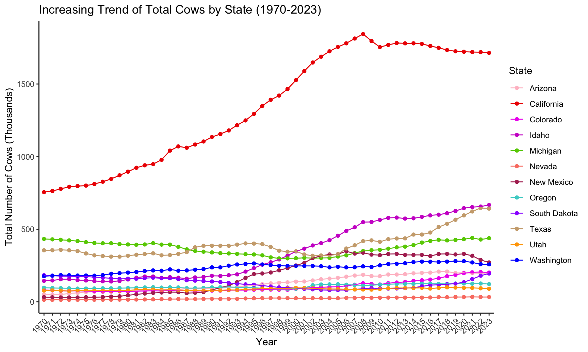
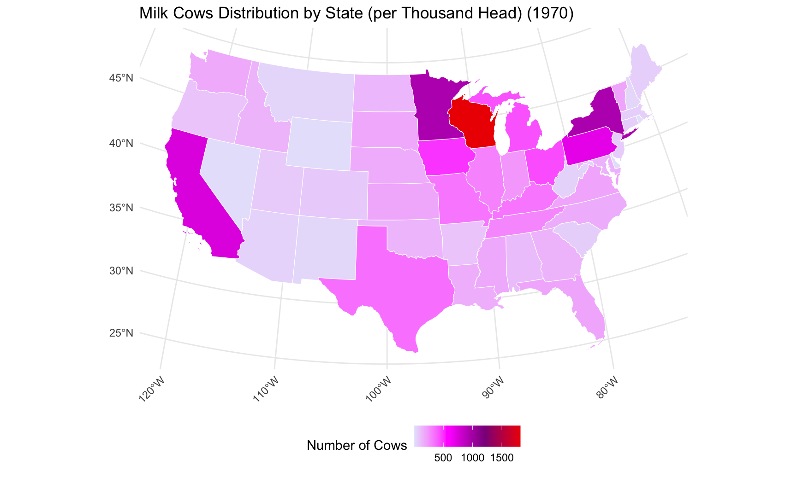
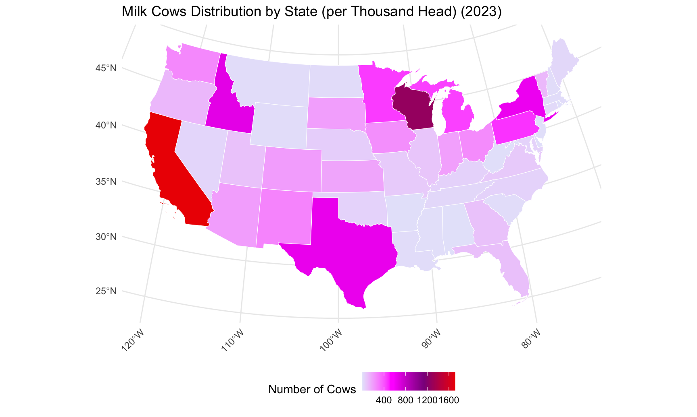
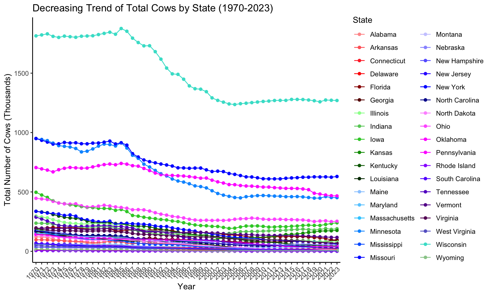
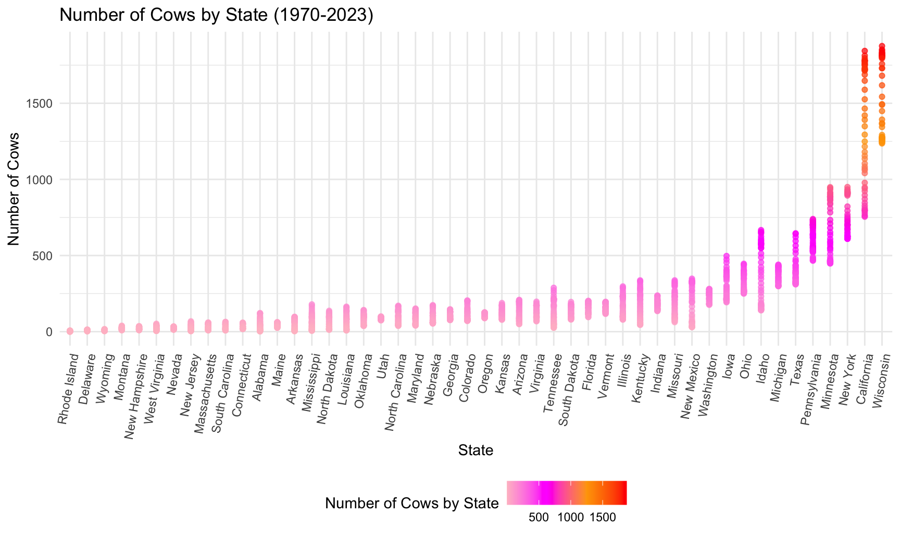
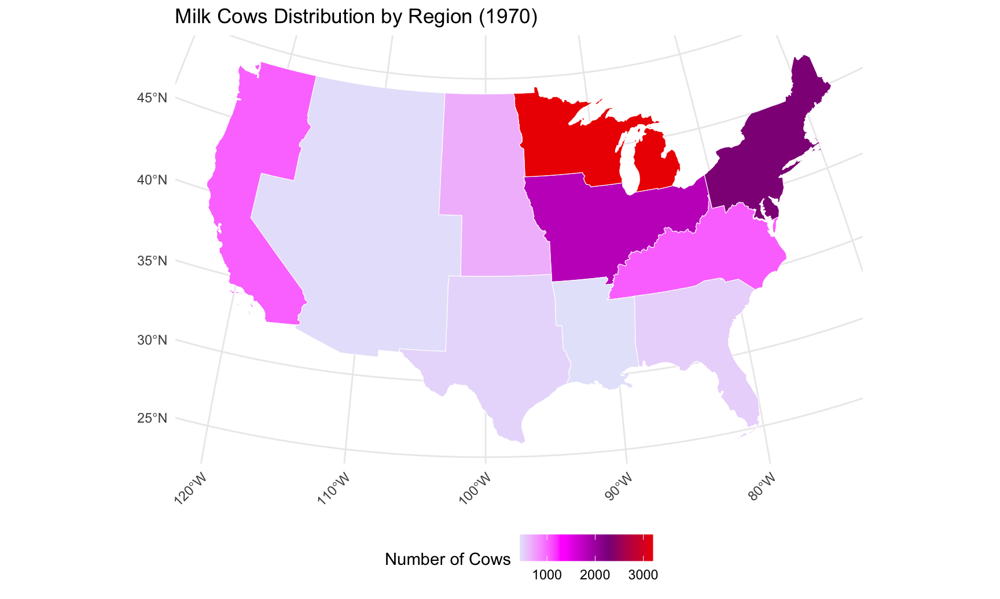
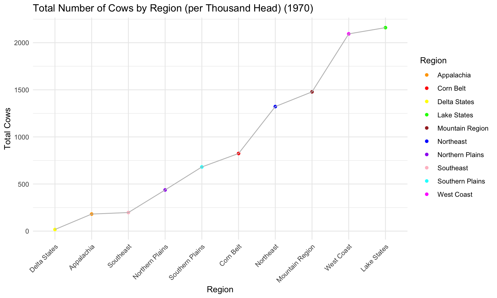
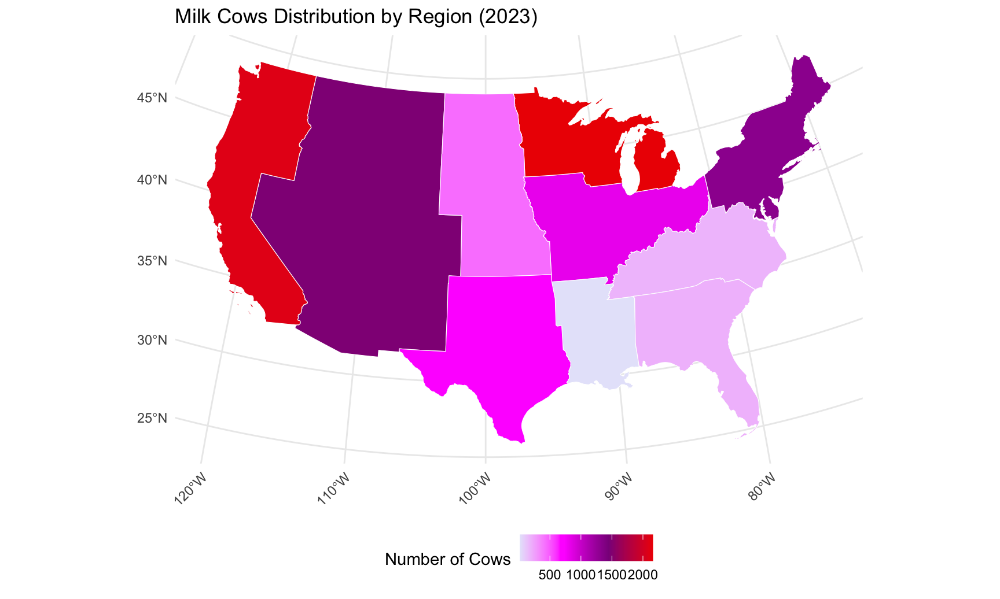

#read milk cows data
milk_cows = readxl::read_excel("./data/milkcowsandprod.xlsx",
sheet="Milk cows",
skip=1,
col_names = TRUE) |>
janitor::clean_names() |>
#drop_na() |>
rename(region = x1) |>
rename(state = back_to_content_page) |>
filter_all(any_vars(!is.na(.))) |>
rename_with(~ gsub("^x", "", .), starts_with("x")) |>
mutate(region = case_when(
state %in% c("Maine", "New Hampshire", "Vermont", "Massachusetts", "Rhode Island",
"Connecticut", "New York", "New Jersey", "Pennsylvania",
"Delaware", "Maryland") ~ "Northeast",
state %in% c("Michigan","Wisconsin","Minnesota") ~ "Lake States",
state %in% c("Ohio","Indiana","Illinois","Iowa","Missouri") ~ "Corn Belt",
state %in% c("North Dakota", "South Dakota", "Nebraska", "Kansas") ~ "Northern Plains",
state %in% c("Virginia", "West Virginia", "North Carolina", "Kentucky", "Tennessee") ~ "Appalachia",
state %in% c("South Carolina", "Georgia", "Florida", "Alabama") ~ "Southeast",
state %in% c("Mississippi", "Arkansas","Louisiana") ~ "Delta States",
state %in% c("Oklahoma","Texas") ~ "Southern Plains",
state %in% c("Montana","Idaho","Wyoming","Colorado","New Mexico","Arizona","Utah","Nevada") ~ "Mountain Region",
state %in% c("Washington","Oregon","California") ~ "West Coast",
state %in% c("Alaska","Hawaii") ~ "Other States"
#TRUE ~ "Other" # Default case for states not in the Northeast
)) |>
filter(!is.na(state)) |>
filter(region != "Other States") |>
mutate(
##remove non numeric character and convert to numeric
`2019` = gsub("[^0-9,.-]", "", `2019`) |> as.numeric(),
`2020` = gsub("[^0-9,.-]", "", `2020`) |> as.numeric(),
`2021` = gsub("[^0-9,.-]", "", `2021`) |> as.numeric(),
`2022` = gsub("[^0-9,.-]", "", `2022`) |> as.numeric(),
`2023` = gsub("[^0-9,.-]", "", `2023`) |> as.numeric()
) |>
pivot_longer(
cols = 3:56,
names_to = "year",
values_to = "number_of_cows"
) |>
drop_na()#table
milk_cows |>
filter(year == 1970) |>
group_by(state,year) |>
summarise(total_cows = sum(number_of_cows, na.rm = TRUE)) |>
arrange(desc(total_cows)) |>
rename(State = state,
"Total Cows 1970" = total_cows) |>
head(5) |>
knitr::kable(caption = "Top 5 States in Total Cows (per Thousand Head) (1970)", format="html") |>
kable_styling(full_width = TRUE, bootstrap_options = "bordered")| State | year | Total Cows 1970 |
|---|---|---|
| Wisconsin | 1970 | 1814 |
| New York | 1970 | 950 |
| Minnesota | 1970 | 949 |
| California | 1970 | 755 |
| Pennsylvania | 1970 | 705 |
milk_cows |>
filter(year == 2023) |>
group_by(state,year) |>
summarise(total_cows = sum(number_of_cows, na.rm = TRUE)) |>
arrange(desc(total_cows)) |>
rename(State = state,
Year = year,
"Total Cows 2023" = total_cows) |>
head(5) |>
knitr::kable(caption = "Top 5 States in Total Cows (per Thousand Head) (2023)", format="html") |>
kable_styling(full_width = TRUE, bootstrap_options = "bordered")| State | Year | Total Cows 2023 |
|---|---|---|
| California | 2023 | 1714 |
| Wisconsin | 2023 | 1270 |
| Idaho | 2023 | 667 |
| Texas | 2023 | 642 |
| New York | 2023 | 630 |
top_5_states <- milk_cows |>
group_by(state) |>
summarise(total_cows = sum(number_of_cows, na.rm = TRUE)) |>
arrange(desc(total_cows)) |>
rename(State = state,
"Total Cows" = total_cows) |>
head(5)
total_cows_usa <- round(sum(milk_cows$number_of_cows, na.rm = TRUE))
avg_cows_state <- round(mean(top_5_states$`Total Cows`, na.rm = TRUE))
#min_cows_state <- min(top_5_states$`Total Cows`, na.rm = TRUE)
summary_stats <- tibble(
State = c("Total Cows in USA", "Avg Number of Cows in USA"), #"Min Number of Cows in USA",
`Total Cows` = c(total_cows_usa, avg_cows_state) #min_cows_state,
)
final_table <- bind_rows(top_5_states, summary_stats)
#print
knitr::kable(final_table, caption = "Top 5 States and Summary Statistics for Total Cows (per Thousand Head) (1970-2023)", format="html") |>
kable_styling(full_width = TRUE, bootstrap_options = "bordered")| State | Total Cows |
|---|---|
| Wisconsin | 81847 |
| California | 72588 |
| New York | 40313 |
| Minnesota | 34790 |
| Pennsylvania | 33446 |
| Total Cows in USA | 536298 |
| Avg Number of Cows in USA | 52597 |
#line plot for milk cows over years across states - increasing and decreasing trend
custom_colors <- c(
"#FF9999", "#FF6666", "#FF3333", "#FF0000", "#990000", "#660000",
"#99FF99", "#66CC66", "#33CC33", "#009900", "#006600", "#003300",
"#99CCFF", "#66CCFF", "#33CCFF", "#0099FF", "#0066FF", "#0033FF",
"#CCCCFF", "#9999FF", "#6666FF", "#3333FF", "#0000FF", "#000099",
"#FF99FF", "#FF66FF", "#FF33FF", "#FF00FF", "#9900FF", "#6600FF",
"#6600CC", "#660099", "#660066", "#6666CC", "#9999CC", "#99CC99",
"#FFCC99", "#FFCC66", "#FFCC33", "#FF9966", "#FF9966", "#FF6699",
"#FF3366", "#FF0033", "#FF0000", "#990033", "#660033", "#330033",
"#9933CC", "#6600CC", "#3300CC"
)
milk_cows |>
group_by(state, year) |>
summarise(total_cows = sum(number_of_cows, na.rm = TRUE), .groups = "drop") |>
ggplot( aes(x = year, y = total_cows, color = state, group = state)) +
geom_point() +
geom_line() +
scale_color_manual(values = custom_colors) +
#scale_colour_discrete() + #don't like it
labs(
title = "Trend of Total Cows by Region (1970-2023)",
x = "Year",
y = "Total Number of Cows",
color = "Region"
) +
theme_classic() +
theme(
axis.text.x = element_text(angle = 45, hjust = 1)
)
#increasing trend
##total number of cows per state, year, and region
state_region_cows_summary <-milk_cows |>
filter(year >= 1970 & year <= 2023) |>
group_by(region, state, year) %>%
summarise(total_cows = sum(number_of_cows, na.rm = TRUE), .groups = "drop")
#year 1970
cows_1970 <- state_region_cows_summary |>
filter(year == 1970) |>
select(region, state, total_cows_1970 = total_cows)
#year2023
cows_2023 <- state_region_cows_summary |>
filter(year == 2023) |>
select(region, state, total_cows_2023 = total_cows)
#combine data
state_region_comparison <- left_join(cows_1970, cows_2023, by = c("region", "state")) |>
mutate(percentage_increase = round(((total_cows_2023 - total_cows_1970) / total_cows_1970) * 100, 2)) |>
filter(percentage_increase > 0) |>
arrange(desc(percentage_increase)) |>
rename(
Region = region,
State = state,
"Total Cows 1970" = total_cows_1970,
"Total Cows 2023" = total_cows_2023,
Percentage_Increase = percentage_increase
)
#table
kable(state_region_comparison, caption = "States and Regions with Percentage Increase in Total Number of Cows (Per Thousand Head) (1970–2023)", format = "html") |>
kable_styling(full_width = TRUE, bootstrap_options = "bordered") | Region | State | Total Cows 1970 | Total Cows 2023 | Percentage_Increase |
|---|---|---|---|---|
| Mountain Region | New Mexico | 32.0 | 271 | 746.88 |
| Mountain Region | Idaho | 144.0 | 667 | 363.19 |
| Mountain Region | Arizona | 50.0 | 198 | 296.00 |
| Mountain Region | Colorado | 81.0 | 201 | 148.15 |
| Mountain Region | Nevada | 13.9 | 33 | 137.41 |
| West Coast | California | 755.0 | 1714 | 127.02 |
| Southern Plains | Texas | 355.0 | 642 | 80.85 |
| West Coast | Washington | 176.0 | 258 | 46.59 |
| West Coast | Oregon | 97.0 | 122 | 25.77 |
| Mountain Region | Utah | 78.0 | 90 | 15.38 |
| Northern Plains | South Dakota | 183.0 | 195 | 6.56 |
| Lake States | Michigan | 433.0 | 438 | 1.15 |
#increasing trend plot
#custom colors
custom_colors <- c(
"#FF9999", "#FF6666", "#FF3333", "#FF0000", "#990000", "#660000",
"#99FF99", "#66CC66", "#33CC33", "#009900", "#006600", "#003300",
"#99CCFF", "#66CCFF", "#33CCFF", "#0099FF", "#0066FF", "#0033FF",
"#CCCCFF", "#9999FF", "#6666FF", "#3333FF", "#0000FF", "#000099",
"#FF99FF", "#FF66FF", "#FF33FF", "#FF00FF", "#9900FF", "#6600FF",
"#6600CC", "#660099", "#660066", "#6666CC", "turquoise", "#99CC99",
"#FFCC99", "#FFCC66", "#FFCC33", "#FF9966", "#FF9966", "#FF6699",
"#FF3366", "#FF0033", "#FF0000", "#990033", "#660033", "#330033",
"#9933CC", "#6600CC", "#3300CC"
)
custom_colors = c("pink","red2","magenta2","magenta3","chartreuse3","salmon","maroon",
"mediumturquoise","purple1","burlywood3","orange","blue")
#decreasing trend
milk_cows |>
filter(state %in% c("New Mexico","Idaho","Arizona","Colorado","Nevada",
"California","Texas","Washington","Oregon","Utah","South Dakota","Michigan")) |>
group_by(state, year) |>
summarise(total_cows = sum(number_of_cows, na.rm = TRUE), .groups = "drop") |>
ggplot(aes(x = year, y = total_cows, color = state, group = state)) +
geom_point() +
geom_line() +
scale_color_manual(values = custom_colors) +
#scale_color_viridis_d(option="plasma")
labs(
title = "Increasing Trend of Total Cows by State (1970-2023)",
x = "Year",
y = "Total Number of Cows (Thousands)",
color = "State"
) +
theme_classic() +
theme(
axis.text.x = element_text(angle = 45, hjust = 1)
)#decreasing trend
state_region_cows_summary <- milk_cows |>
filter(year >= 1970 & year <= 2023) |>
group_by(region, state, year) |>
summarise(total_cows = sum(number_of_cows, na.rm = TRUE), .groups = "drop")
#1970
cows_1970 <- state_region_cows_summary |>
filter(year == 1970) |>
select(region, state, total_cows_1970 = total_cows)
#2023
cows_2023 <- state_region_cows_summary |>
filter(year == 2023) |>
select(region, state, total_cows_2023 = total_cows)
#combine
state_region_comparison <- left_join(cows_1970, cows_2023, by = c("region", "state")) |>
mutate(percentage_decrease = round(((total_cows_2023 - total_cows_1970) / total_cows_1970) * 100, 2)) |>
filter(percentage_decrease < 0) |>
arrange(percentage_decrease) |>
rename(
Region = region,
State = state,
"Total Cows 1970" = total_cows_1970,
"Total Cows 2023" = total_cows_2023,
Percentage_Decrease = percentage_decrease
)
#table
kable(state_region_comparison, caption = "States and Regions with Percentage Decrease in Total Number of Cows (Per Thousand Head) (1970–2023)", format = "html") |>
kable_styling(full_width = TRUE, bootstrap_options = "bordered")| Region | State | Total Cows 1970 | Total Cows 2023 | Percentage_Decrease |
|---|---|---|---|---|
| Southeast | Alabama | 122.0 | 2.0 | -98.36 |
| Delta States | Arkansas | 97.0 | 3.0 | -96.91 |
| Delta States | Mississippi | 179.0 | 6.0 | -96.65 |
| Delta States | Louisiana | 164.0 | 8.0 | -95.12 |
| Northeast | New Jersey | 68.0 | 4.0 | -94.12 |
| Northeast | Rhode Island | 6.9 | 0.5 | -92.75 |
| Appalachia | Tennessee | 288.0 | 25.0 | -91.32 |
| Northern Plains | North Dakota | 137.0 | 12.0 | -91.24 |
| Appalachia | West Virginia | 52.0 | 5.0 | -90.38 |
| Southeast | South Carolina | 64.0 | 8.0 | -87.50 |
| Appalachia | Kentucky | 337.0 | 45.0 | -86.65 |
| Northeast | Massachusetts | 60.0 | 9.0 | -85.00 |
| Corn Belt | Missouri | 337.0 | 62.0 | -81.60 |
| Northeast | Delaware | 13.5 | 2.7 | -80.00 |
| Appalachia | North Carolina | 170.0 | 38.0 | -77.65 |
| Mountain Region | Montana | 39.0 | 9.0 | -76.92 |
| Northeast | Maryland | 152.0 | 40.0 | -73.68 |
| Corn Belt | Illinois | 297.0 | 79.0 | -73.40 |
| Southern Plains | Oklahoma | 142.0 | 39.0 | -72.54 |
| Northeast | New Hampshire | 36.0 | 10.0 | -72.22 |
| Northeast | Connecticut | 59.0 | 18.0 | -69.49 |
| Northern Plains | Nebraska | 174.0 | 54.0 | -68.97 |
| Appalachia | Virginia | 197.0 | 68.0 | -65.48 |
| Northeast | Maine | 62.0 | 25.0 | -59.68 |
| Lake States | Minnesota | 949.0 | 452.0 | -52.37 |
| Corn Belt | Iowa | 497.0 | 240.0 | -51.71 |
| Southeast | Florida | 191.0 | 96.0 | -49.74 |
| Mountain Region | Wyoming | 16.5 | 9.3 | -43.64 |
| Corn Belt | Ohio | 446.0 | 253.0 | -43.27 |
| Northeast | Vermont | 194.0 | 117.0 | -39.69 |
| Southeast | Georgia | 146.0 | 91.0 | -37.67 |
| Northeast | Pennsylvania | 705.0 | 466.0 | -33.90 |
| Northeast | New York | 950.0 | 630.0 | -33.68 |
| Lake States | Wisconsin | 1814.0 | 1270.0 | -29.99 |
| Corn Belt | Indiana | 237.0 | 190.0 | -19.83 |
| Northern Plains | Kansas | 188.0 | 176.0 | -6.38 |
#decreasing trend plot
#custom colors
custom_colors <- c(
"#FF9999", "#FF6666", "#FF3333", "#FF0000", "#990000", "#660000",
"#99FF99", "#66CC66", "#33CC33", "#009900", "#006600", "#003300",
"#99CCFF", "#66CCFF", "#33CCFF", "#0099FF", "#0066FF", "#0033FF",
"#CCCCFF", "#9999FF", "#6666FF", "#3333FF", "#0000FF", "#000099",
"#FF99FF", "#FF66FF", "#FF33FF", "#FF00FF", "#9900FF", "#6600FF",
"#6600CC", "#660099", "#660066", "#6666CC", "turquoise", "#99CC99",
"#FFCC99", "#FFCC66", "#FFCC33", "#FF9966", "#FF9966", "#FF6699",
"#FF3366", "#FF0033", "#FF0000", "#990033", "#660033", "#330033",
"#9933CC", "#6600CC", "#3300CC"
)
#decreasing trend
milk_cows |>
filter(state %in% c("Alabama", "Arkansas", "Mississippi", "Louisiana", "New Jersey",
"Rhode Island", "Tennessee", "North Dakota", "West Virginia",
"South Carolina", "Kentucky", "Massachusetts", "Missouri",
"Delaware", "North Carolina", "Montana", "Maryland", "Illinois", "Oklahoma",
"New Hampshire", "Connecticut", "Nebraska", "Virginia", "Maine",
"Minnesota", "Iowa", "Florida", "Wyoming", "Ohio", "Vermont", "Georgia",
"Pennsylvania", "New York", "Wisconsin", "Indiana", "Kansas")) |>
group_by(state, year) |>
summarise(total_cows = sum(number_of_cows, na.rm = TRUE), .groups = "drop") |>
ggplot(aes(x = year, y = total_cows, color = state, group = state)) +
geom_point() +
geom_line() +
scale_color_manual(values = custom_colors) +
#scale_color_viridis_d(option="plasma")
labs(
title = "Decreasing Trend of Total Cows by State (1970-2023)",
x = "Year",
y = "Total Number of Cows (Thousands)",
color = "State"
) +
theme_classic() +
theme(
axis.text.x = element_text(angle = 45, hjust = 1)
)
#map coordinates of states
us_states <- usmap::us_map()
#abbreviation for state names
data_milk_cows = milk_cows |> mutate(
state_abbr = state.abb[match(state, state.name)]
)
#merge location data with production data
combine_milk_cows_1970 <- us_states |>
left_join(data_milk_cows, by = c("abbr" = "state_abbr")) |>
filter (year == "1970")
ggplot(combine_milk_cows_1970) +
geom_sf(aes(fill = number_of_cows), color = "white", size = 0.2) +
#scale_fill_viridis_c(name = "number_of_cows",option = "plasma") +
scale_fill_gradientn(
#colors = c("pink", "magenta","orange","red"), #magenta
colors = c("lavender","magenta","darkmagenta","red2"), #"purple1"
name = "Number of Cows"
) +
theme_minimal() +
labs(title = "Milk Cows Distribution by State (per Thousand Head) (1970)") +
theme(
axis.text.x = element_text(angle = 45, hjust = 1),
legend.position = "bottom"
)
combine_milk_cows_2023 <- us_states |>
left_join(data_milk_cows, by = c("abbr" = "state_abbr")) |>
filter (year == "2023")
ggplot(combine_milk_cows_2023) +
geom_sf(aes(fill = number_of_cows), color = "white", size = 0.2) +
#scale_fill_viridis_c(name = "number_of_cows",option = "plasma") +
scale_fill_gradientn(
#colors = c("pink", "magenta","orange","red"), #magenta
colors = c("lavender","magenta","darkmagenta","red2"), #"purple1"
name = "Number of Cows"
) +
theme_minimal() +
labs(title = "Milk Cows Distribution by State (per Thousand Head) (2023)") +
theme(
axis.text.x = element_text(angle = 45, hjust = 1),
legend.position = "bottom"
)
combine_milk_cows = milk_cows |>
group_by(region, state, year) |>
summarise(total_cows = sum(number_of_cows, na.rm = TRUE), .groups = "drop")
ggplot(combine_milk_cows) +
geom_point(aes(x = reorder(state, total_cows), y = total_cows, color = total_cows),
alpha = 0.7) +
#scale_size_continuous(name = "number_of_cows", range = c(3, 7)) +
# scale_color_viridis_c(name = "number_of_cows") +
scale_color_gradientn(
colors = c("pink", "magenta", "orange","red"), #magenta
name = "Number of Cows by State"
) +
theme(axis.text.x = element_text(angle = 80, hjust = 1))+
labs(title = "Number of Cows by State",
x = "State",
y = "Number of Cows")
#line plot milk cows over years by region
milk_cows |>
group_by(region, year) |>
summarise(total_cows = sum(number_of_cows, na.rm = TRUE), .groups = "drop") |>
ggplot(aes(x = year, y = total_cows, color = region, group = region)) +
geom_point() +
geom_line() +
#scale_color_brewer(palette = "Set3") +
scale_color_manual(
values = c("Appalachia" = "pink",
"Delta States" = "orange",
"Mountain Region" = "magenta2",
"Corn Belt" = "chartreuse3",
"Northern Plains" = "salmon",
"Southern Plains" = "maroon",
"Lake States" = "mediumturquoise",
"Northeast" = "purple1",
"Southeast" = "burlywood2",
"West Coast" ="red2" )) +
labs(
title = "Trend of Total Cows by Region (1970-2023)",
x = "Year",
y = "Total Number of Cows",
color = "Region"
) +
theme_classic() +
theme(
axis.text.x = element_text(angle = 45, hjust = 1),
legend.position = "bottom"
)
#region 1970
combine_region_cows_1970 <- us_states |>
left_join(data_milk_cows, by = c("abbr" = "state_abbr")) |>
filter (year == "1970") |>
group_by(region, year) |>
summarise(total_cows = sum(number_of_cows, na.rm = TRUE), .groups = "drop")
#table 1970
milk_cows |>
group_by(region, year) |>
filter(year == "1970") |>
summarise(total_cows = sum(number_of_cows, na.rm = TRUE), .groups = "drop") |>
arrange(desc(total_cows)) |>
rename(Region = region,
"Total Cows" = total_cows) |>
knitr::kable(caption = "Total Number of Cows by Region (1970)", format = "html") |>
kableExtra::kable_styling(full_width = TRUE, bootstrap_options = "bordered")| Region | year | Total Cows |
|---|---|---|
| Lake States | 1970 | 3196.0 |
| Northeast | 1970 | 2306.4 |
| Corn Belt | 1970 | 1814.0 |
| Appalachia | 1970 | 1044.0 |
| West Coast | 1970 | 1028.0 |
| Northern Plains | 1970 | 682.0 |
| Southeast | 1970 | 523.0 |
| Southern Plains | 1970 | 497.0 |
| Mountain Region | 1970 | 454.4 |
| Delta States | 1970 | 440.0 |
#line plot
ggplot(combine_region_cows_1970, aes(x = reorder(region, total_cows), y = total_cows, color = region)) +
geom_point() +
geom_line(group = 1, color = "gray") +
scale_color_manual(values = c("Northeast" = "blue", "Lake States" = "green",
"Corn Belt" = "red", "Northern Plains" = "purple",
"Appalachia" = "orange", "Southeast" = "pink",
"Delta States" = "yellow", "Southern Plains" = "cyan",
"Mountain Region" = "brown", "West Coast" = "magenta")) +
labs(
title = "Total Number of Cows by Region (per Thousand Head) (1970)",
x = "Region",
y = "Total Cows",
color = "Region"
) +
theme_minimal() +
theme(axis.text.x = element_text(angle = 45, hjust = 1))#us map 1970
ggplot(combine_region_cows_1970) +
geom_sf(aes(fill = total_cows), color = "white", size = 0.2) +
scale_fill_gradientn(
#colors = c("pink", "magenta","orange","red"), #magenta
colors = c("lavender","magenta","darkmagenta","red2"), #"purple1"
name = "Number of Cows"
)+
theme_minimal() +
labs(title = "Milk Cows Distribution by Region (1970)") +
theme(
axis.text.x = element_text(angle = 45, hjust = 1),
legend.position = "bottom"
)
#region 2023
combine_region_cows_2023 <- us_states |>
left_join(data_milk_cows, by = c("abbr" = "state_abbr")) |>
filter (year == "2023") |>
group_by(region, year) |>
summarise(total_cows = sum(number_of_cows, na.rm = TRUE), .groups = "drop")
#table
milk_cows |>
group_by(region, year) |>
filter(year == "2023" ) |>
summarise(total_cows = sum(number_of_cows, na.rm = TRUE), .groups = "drop") |>
arrange(desc(total_cows)) |>
rename(Region = region,
"Total Cows" = total_cows) |>
knitr::kable(caption = "Total Number of Cows by Region (1970)", format = "html") |>
kableExtra::kable_styling(full_width = TRUE, bootstrap_options = "bordered")| Region | year | Total Cows |
|---|---|---|
| Lake States | 2023 | 2160.0 |
| West Coast | 2023 | 2094.0 |
| Mountain Region | 2023 | 1478.3 |
| Northeast | 2023 | 1322.2 |
| Corn Belt | 2023 | 824.0 |
| Southern Plains | 2023 | 681.0 |
| Northern Plains | 2023 | 437.0 |
| Southeast | 2023 | 197.0 |
| Appalachia | 2023 | 181.0 |
| Delta States | 2023 | 17.0 |
#line plot
ggplot(combine_region_cows_2023, aes(x = reorder(region, total_cows), y = total_cows, color = region)) +
geom_point() +
geom_line(group = 1, color = "gray") +
scale_color_manual(values = c("Northeast" = "blue", "Lake States" = "green",
"Corn Belt" = "red", "Northern Plains" = "purple",
"Appalachia" = "orange", "Southeast" = "pink",
"Delta States" = "yellow", "Southern Plains" = "cyan",
"Mountain Region" = "brown", "West Coast" = "magenta")) +
labs(
title = "Total Number of Cows by Region (per Thousand Head) (1970)",
x = "Region",
y = "Total Cows",
color = "Region"
) +
theme_minimal() +
theme(axis.text.x = element_text(angle = 45, hjust = 1))
#us map 2023
ggplot(combine_region_cows_2023) +
geom_sf(aes(fill = total_cows), color = "white", size = 0.2) +
scale_fill_gradientn(
#colors = c("pink", "magenta","orange","red"), #magenta
colors = c("lavender","magenta","darkmagenta","red2"), #"purple1"
name = "Number of Cows"
)+
theme_minimal() +
labs(title = "Milk Cows Distribution by Region (2023)") +
theme(
axis.text.x = element_text(angle = 45, hjust = 1),
legend.position = "bottom"
)